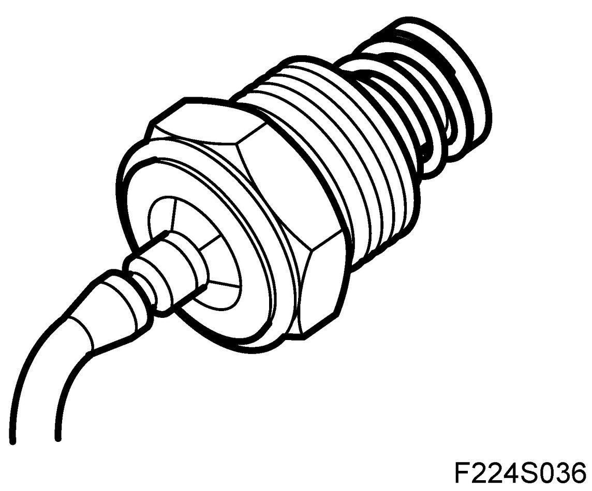
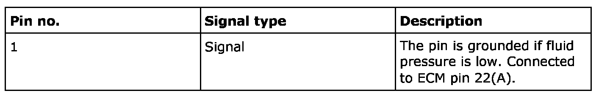
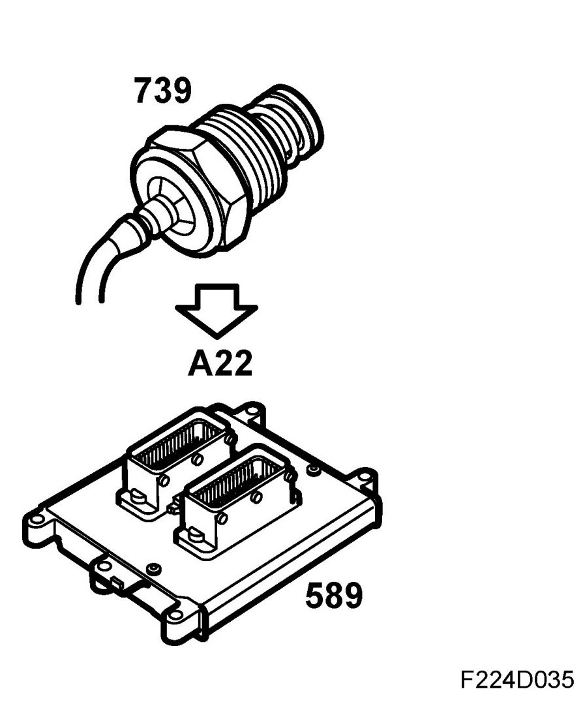
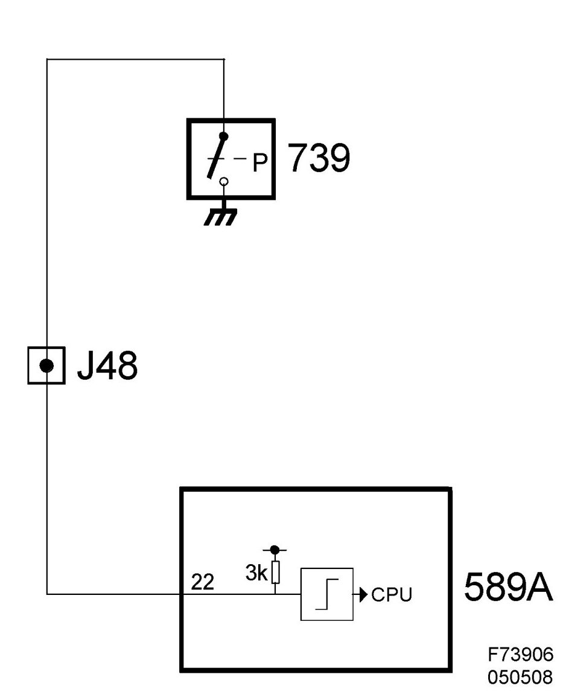

Pressure Switch, Power Steering Fluid (739), B207
Pressure Switch, Power Steering Fluid (739), B207
Location
Pressure switch, power steering fluid (739)
Main task
To inform ECM when great servo assistance is requested. If necessary, engine idling speed is increased.
Type
Pressure-controlled, closing switch.

Connection


